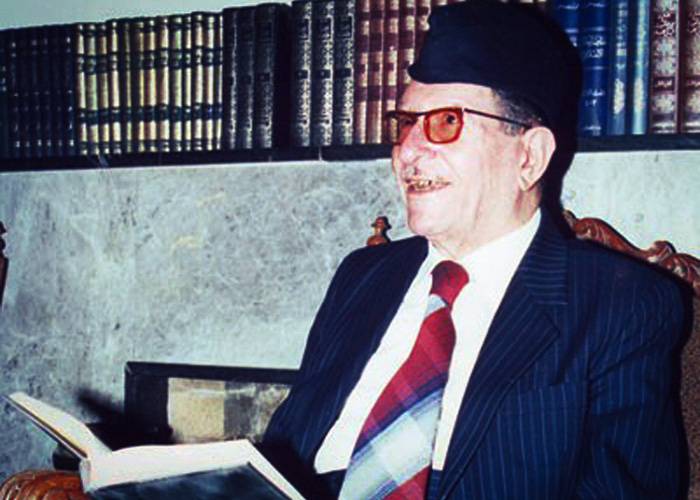

Ali Al-Wardi
the modren Ibn Khaldun

dr.Ali Al-Wardi spaking library t
Here's a time line of Dr.Ali Al-Wardi
- Born in Kadhimiya, Baghdad in 1913
- He grew up defying his family's strict non-modern-educational policy, where his father wanted him to learn a craft instead of reading books.
- Nevertheless, Al-Wardi grew up with a disliking for work and crafts and a strong liking for books.
- He managed to finish his elementary and high school and was awarded the number one student in the Kingdom of Iraq.
- He later was appointed as a teacher in different elementary and high schools across Iraq, before winning a scholarship to the American University of Beirut, where he received his bachelor's degree in 1943.
- He was back in Iraq and was forced into marriage per his father's orders.
- A few years later, he traveled to the United States to attain his master's and PhD degrees
- He earned his master's degree in 1948 from The University of Texas and his PhD in 1950 from the same university.
- During that time he used to spend his summers in the United Kingdom learning English in available institutes.
- He came back to Iraq to start his career in writing many of his books based on the theory of Ibn Khaldun about Al-Badwa (Nomadic society) vs Al-Hadhara (Civil society)
- He died 13 July 1995 (aged 81) Adhamiyah, Baghdad, Republic of Iraq